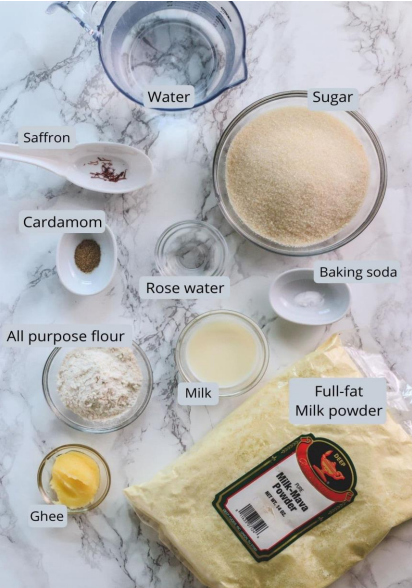

Indian Chicken Curry (Murgh Kari):

Ingredients:
2 poundsskinless, boneless chicken breast halves
2 teaspoonssalt
½ cup cooking oil
1 ½ cups chopped onion
1 tablespoon minced garlic
1 ½ teaspoons minced fresh ginger root
1 tablespoon curry powder
1 teaspoon ground cumin
1 teaspoon ground turmeric
1 teaspoon ground coriander
1 teaspoon cayenne pepper
1 tablespoon water
1 (15 ounce) can crushed tomatoes
1 cup plain yogurt
1 tablespoon chopped fresh cilantro
1 teaspoon salt
½ cup water
1 teaspoon garam masala
1 tablespoon chopped fresh cilantro
1 tablespoon fresh lemon juice

Instructions:
1. Mix the milk powder, flour and baking powder in a bowl
2. Separately whisk together the melted ghee, egg and cream
3. Pour into the dry ingredients and use a spoon to bring together into a dough
4. Lightly knead the dough for 1-2 minutes to make sure there are no lumps and refrigerate for 20 min
5. Knead the dough again when it’s cooled to make sure it is smooth. Once it is smooth and binds
together properly, stop kneading. If it feels too dry, add a tablespoon of milk and knead
6. Divide the dough into small balls (jamuns) about 20g each (you should get around 12 total). Apply
light pressure between your palms while circling one palm, and lightly roll to form perfect balls.
Make sure there aren’t any large cracks on them. Put back in the fridge
7. Heat 2" of oil in a wok on medium heat
8. Separately, mix sugar, water and cardamom in a saucepan and bring to a boil. Simmer until the
sugar dissolves, then turn off the heat and cover
9. Once the oil is warm (but not too hot, test with a small piece of dough - it should rise to the surface
slowly), gently transfer half of the balls into it
10. Swirl your wok so the jamuns start to float and turn, then use a large strainer to gently swirl them as
you fry them. Fry for about 4 min until they are evenly brown
11. Transfer the gulab jamun to the saucepan with the hot syrup. Swirl them around to make sure they
are well coated on all sides. Then cover and rest for at least 30 minutes to allow the gulab jamun to
soak the syrup.
12. Serve and enjoy!